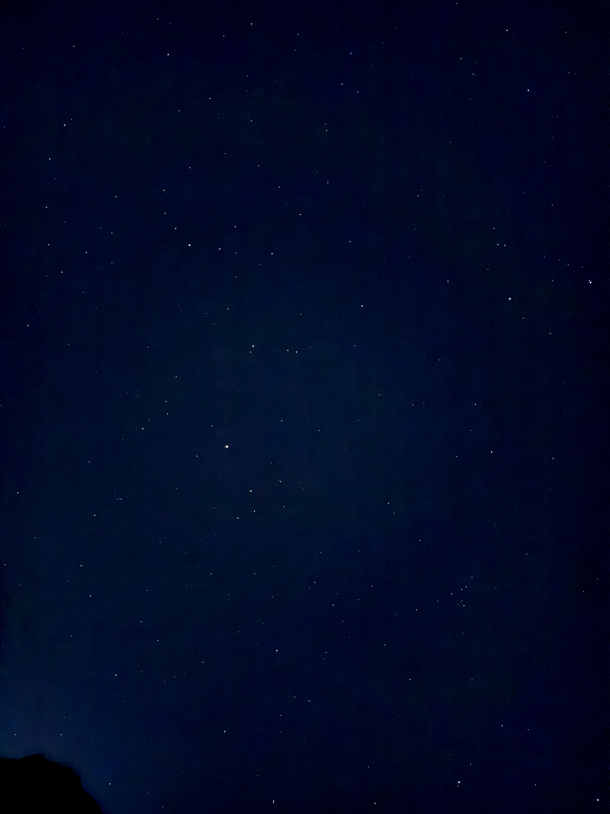

Drop a photo here or click to pick
any format (JPEG, PNG, WebP, HEIC*, TIFF, BMP…) · *HEIC may need conversion
Example — sample photo, before & after


Loading WebAssembly engine…
Flatten light pollution · denoise · reveal stars. Runs fully in your browser via WebAssembly — nothing uploaded.
Example — sample photo, before & after
